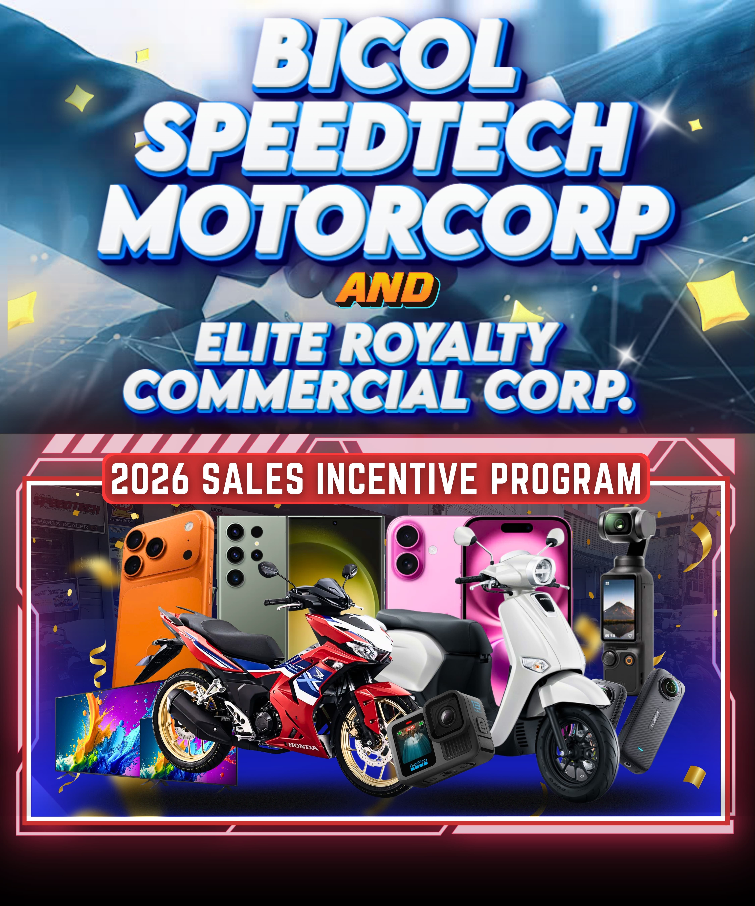
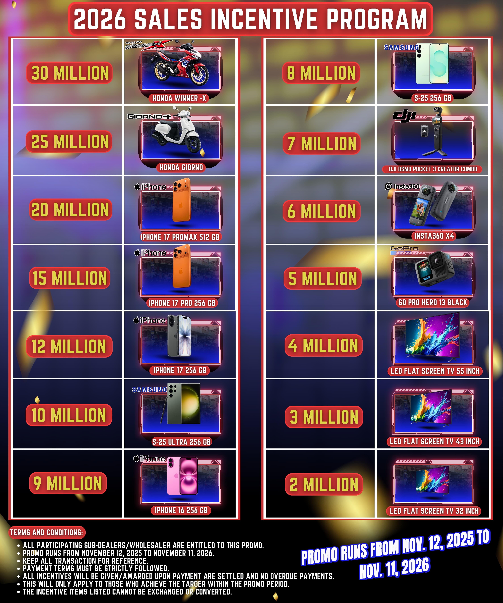
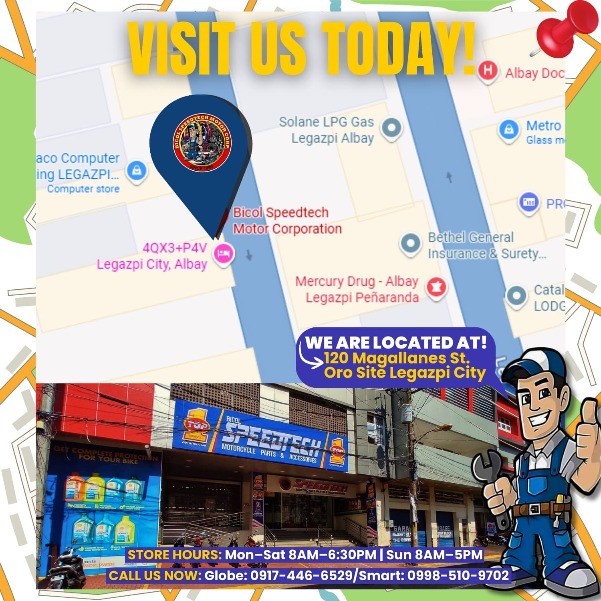
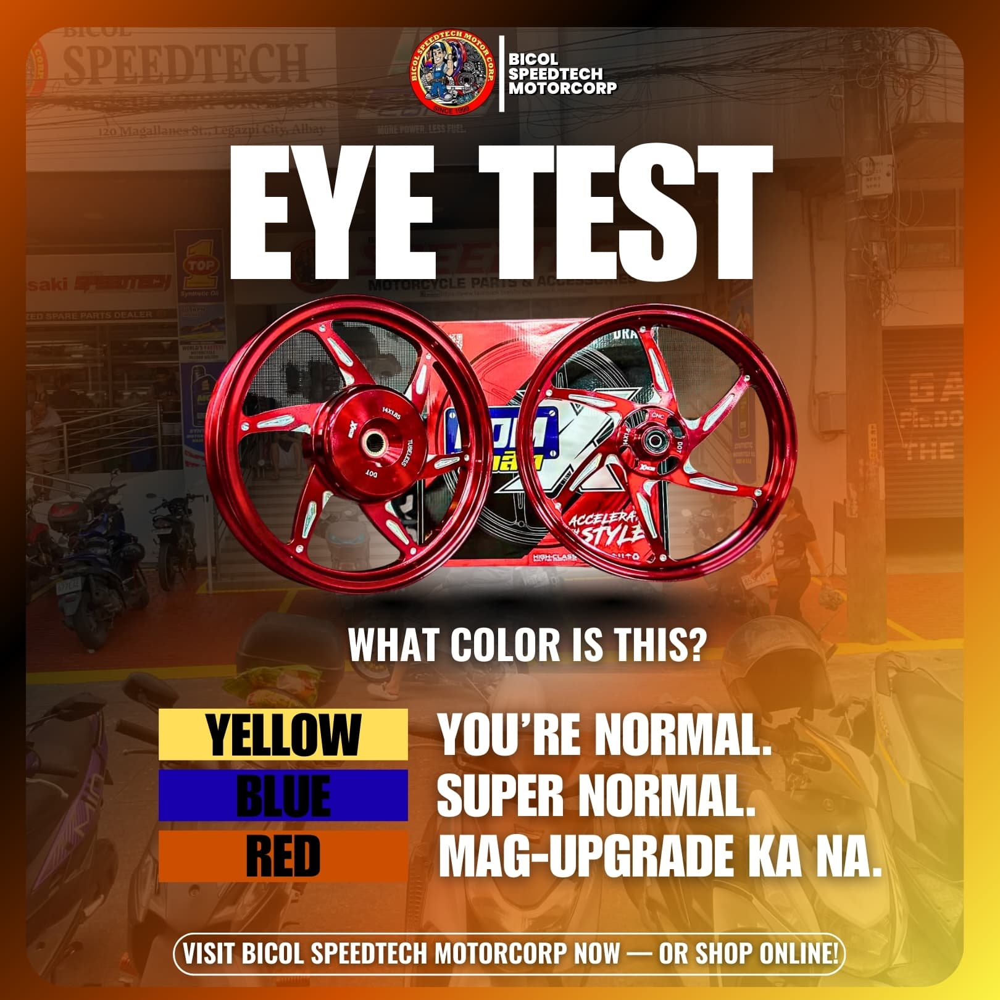
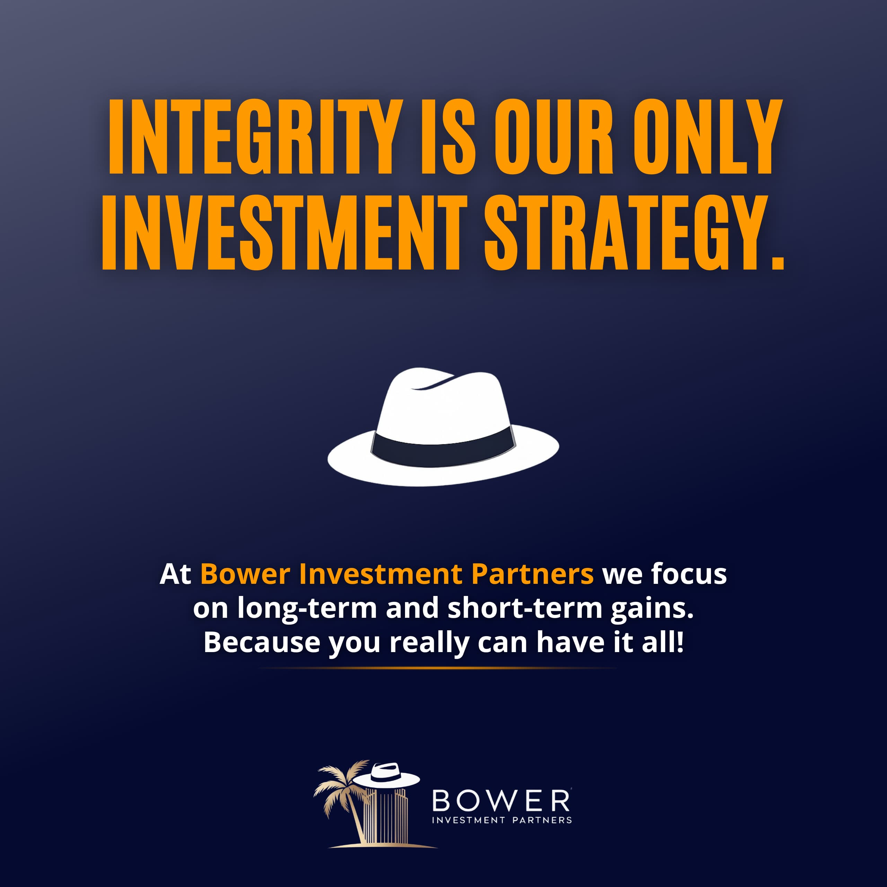

Results-driven Social Media Specialist and Digital Marketing Professional managing Facebook, Instagram, LinkedIn, and TikTok platforms through strategic content creation, analytics-driven optimization, and engaging visual campaigns.
Explore My WorkBS Computer Science graduate (Cum Laude) specializing in social media growth strategies, digital marketing campaigns, and high-performing visual content creation. Experienced in content strategy, audience engagement, performance analytics, and graphic design with tools like Canva and CapCut.





Develop and manage monthly content calendars, design marketing graphics, and produce engaging short-form video content to improve audience engagement and brand visibility.
Managed Facebook pages growing from 0 to 70K-120K followers through consistent content, community engagement, and collaboration with influencers.
Bicol University Polangui – Cum Laude
2020 – 2024